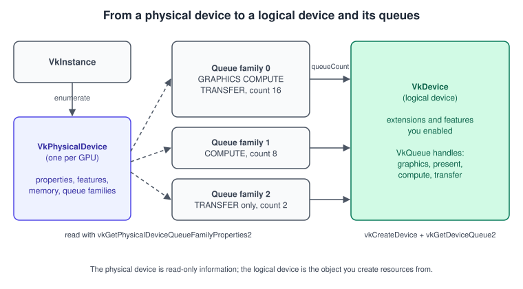
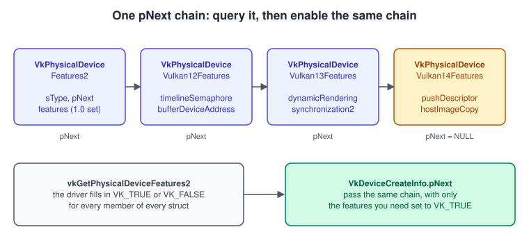
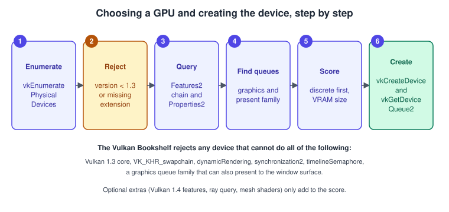

Physical and Logical Devices
|
This content was generated with the assistance of AI and should be verified against the official documentation before being relied on in production. |
A Vulkan instance knows nothing about your GPU. To draw anything you first have to ask the instance which GPUs exist, decide which
one to use, find out what it can do, and then create a logical device that switches on exactly the extensions and features you
intend to use. Two objects carry this story: the VkPhysicalDevice, a read-only handle that represents one piece of hardware (or
one software rasteriser), and the VkDevice, the logical device that every resource, pipeline, command pool and queue is created
from. This page covers both, the queue families that sit between them, and the enable-what-you-use model that keeps Vulkan
drivers lean.
The facts were checked in November 2026. The version documented is Vulkan 1.4 (Vulkan-Headers 1.4.3xx, LunarG SDK 1.4.363.0), with Vulkan 1.3 as the minimum for the running example; every Vulkan 1.4 feature used is optional and tested for at runtime. Everything here works on Windows, Linux, Android and, through the portability layers, macOS and iOS (see Vulkan on Apple: MoltenVK and KosmicKrisp).
This is the second stage of the Vulkan Bookshelf running example (C++20, Vulkan-Hpp RAII, VMA, GLFW or SDL3 and Slang shaders, with GLSL and HLSL alternatives): after the instance with validation from Instance, Loader and Layers and Validation and Debug Utils, the program picks a GPU and creates the device. The next page, Queues and Command Buffers, uses the queues created here. The reason Vulkan makes you do this work explicitly is explained in Explicit vs Implicit APIs.
From physical device to logical device

| Object | What it is | Notes |
|---|---|---|
|
A handle to one GPU as seen by the loader. It is owned by the instance and needs no destruction. |
It only answers questions: properties, features, limits, memory heaps, queue families, format and surface support. It cannot create resources. |
|
The logical device: your connection to the GPU, with its enabled extensions and features. |
Created with |
|
One queue of one queue family, created together with the device. |
There is no |
A physical device is a snapshot of the hardware plus the installed driver. Because several drivers (installable client drivers,
or ICDs) can be present at once, the same GPU can appear twice, for example through a vendor driver and through a Mesa driver, and
a software implementation such as lavapipe or SwiftShader can appear next to real hardware. The loader returns all of them from
vkEnumeratePhysicalDevices, in an order that is not specified, so a program must never simply take the first entry.
Enumerating and inspecting physical devices
vkEnumeratePhysicalDevices follows the usual Vulkan two-call pattern: ask for the count, allocate, ask again. Vulkan-Hpp hides
this and returns a vector. The result can be empty (no driver, or a driver that rejected the instance, for instance because
VK_KHR_portability_enumeration was not enabled on macOS), and a VK_INCOMPLETE result from the C API means your array was too
small.
For each device you read three families of information.
| Query | What it returns | Typical use |
|---|---|---|
|
|
Reject devices with a too-low |
|
|
Decide which features to enable; see the next sections. |
|
Heaps and memory types, queue families, per-format capabilities. |
Memory is covered in Memory Heaps, Types and VMA; formats and usage in Buffers, Images and Views. |
VkPhysicalDeviceType has five values: VK_PHYSICAL_DEVICE_TYPE_DISCRETE_GPU, INTEGRATED_GPU, VIRTUAL_GPU, CPU and OTHER.
A discrete GPU is usually the right first choice on a desktop and an integrated GPU the only choice on a phone, but the type is
a hint, not a benchmark: a laptop’s integrated GPU can be the one connected to the display, and a discrete GPU can be slower than
a recent integrated one. Many applications therefore rank by type and then let the user override the choice with a command-line
option or a settings entry.
The version of a device
VkPhysicalDeviceProperties::apiVersion is the highest Vulkan version the device and driver support, packed with
VK_MAKE_API_VERSION(variant, major, minor, patch) and unpacked with VK_API_VERSION_MAJOR, VK_API_VERSION_MINOR and
VK_API_VERSION_PATCH. The older VK_MAKE_VERSION macros are deprecated because they have no variant field; the variant is zero
for Vulkan and nonzero for other APIs that share the header, such as Vulkan SC. The version of core functionality you can actually
use is the lower of the apiVersion you passed in VkApplicationInfo when creating the instance and the device’s apiVersion.
If you request 1.4 on the instance and the device reports 1.3, the 1.4 commands are not available from that device, and the driver
version in driverVersion is vendor-specific encoding that you should print but never compare across vendors.
Features: ask, then enable
Features are optional capabilities that cost the driver something when active. The model is deliberate: you query what the device
can do, and then you enable the subset you will use when creating the device. A feature that was not enabled is not guaranteed to
work even if the hardware supports it, and the validation layer reports using one without enabling it. Features were once a single
flat structure, VkPhysicalDeviceFeatures (the Vulkan 1.0 set, for example samplerAnisotropy and geometryShader). They are now
grouped by origin:
-
VkPhysicalDeviceFeaturesthroughVkPhysicalDeviceFeatures2::features, the Vulkan 1.0 set. -
VkPhysicalDeviceVulkan11Features,Vulkan12Features,Vulkan13FeaturesandVulkan14Features, the features that were promoted into core with each release (for exampletimelineSemaphoreandbufferDeviceAddressin 1.2,dynamicRenderingandsynchronization2in 1.3,pushDescriptorandhostImageCopyin 1.4). Each struct only means something when the device reports at least that version. -
One
VkPhysicalDevice<Name>FeaturesKHRorEXTstructure per extension that has features, for example ray query or mesh shaders.
The structures are linked through pNext, each starting with an sType tag, and one pointer to the head of the chain is passed to
both the query and the device creation.

Three rules are worth remembering:
-
When
VkDeviceCreateInfo::pNextcontains aVkPhysicalDeviceFeatures2,pEnabledFeaturesmust beNULL; the two are alternative ways to give the Vulkan 1.0 features. -
Only enable a feature whose structure was reported as supported. Requesting an unsupported feature makes
vkCreateDevicefail withVK_ERROR_FEATURE_NOT_PRESENT; requesting an unsupported extension fails withVK_ERROR_EXTENSION_NOT_PRESENT. -
A feature in a Vulkan 1.1 to 1.4 struct and the same feature in the original extension struct are one and the same capability. Do not chain both for the same feature, because the spec forbids setting them inconsistently.
The Vulkan version tables also changed what is mandatory. Several Vulkan 1.0 features became required in 1.4, including
samplerAnisotropy, independentBlend, shaderInt16 and scalarBlockLayout, so on a conformant 1.4 device you can enable them
without a fallback. Minimum limits were raised as well: for example maxPushConstantsSize from 128 to 256 bytes, maxBoundDescriptorSets
from 4 to 7 and maxColorAttachments from 7 to 8. A 1.3 device keeps the old minimums, so code that targets both must still read the
actual limit.
Extensions
vkEnumerateDeviceExtensionProperties(physicalDevice, nullptr, ...) lists the device extensions the driver supports (pass a layer
name to list a layer’s own). You enable extensions by name in VkDeviceCreateInfo::ppEnabledExtensionNames. The rules are:
-
Extensions promoted to the version you require do not need to be enabled. With a Vulkan 1.3 device you use dynamic rendering without naming
VK_KHR_dynamic_rendering; enabling the old name is harmless but unnecessary. -
An extension that depends on another needs both enabled.
-
VK_KHR_swapchainis a device extension that is required to present; it is not part of any core version. -
If the device reports
VK_KHR_portability_subset(the case for MoltenVK and other layered implementations), you must enable it, and then readVkPhysicalDevicePortabilitySubsetFeaturesKHRbecause a few core features may be missing. This is explained on the Apple page; the instance-side half,VK_KHR_portability_enumeration, is in Instance, Loader and Layers.
How extensions relate to versions, how they are promoted and how profiles bundle a whole set of requirements is the subject of
Versions, Profiles and Extensions. A profile such as Roadmap 2026 lets you ask one
question ("does this device support the milestone?") instead of testing each feature, and the SDK’s vkprofiles tools can check it.
Queue families
Every operation you submit to a Vulkan device goes through a queue, and queues are grouped in families by capability. A
VkQueueFamilyProperties entry (returned inside VkQueueFamilyProperties2 by vkGetPhysicalDeviceQueueFamilyProperties2)
describes one family:
| Member | Meaning | Notes |
|---|---|---|
|
|
Graphics implies the graphics pipeline and draw commands; compute covers dispatch and ray tracing. Vulkan 1.4 requires every graphics- or compute-capable family to also advertise transfer, so the transfer bit may be absent from older drivers but you can rely on it for 1.4. |
|
How many queues the family offers. |
You may create any number from 1 to |
|
How many bits of timestamps written on this family are valid. Zero means timestamps are not supported. |
Check before using timestamp queries; see Multithreading and Performance. |
|
The smallest copy region granularity for image transfers on this family. |
Matters for tiny transfer-only families; a granularity of (1,1,1) means no restriction. |
Chaining VkQueueFamilyGlobalPriorityProperties onto the query (global priority was promoted to core in Vulkan 1.4, from
VK_KHR_global_priority) reports which global priorities the family accepts. Chaining VkQueueFamilyVideoPropertiesKHR reports
the codec operations of video families.
Typical layouts, as a guide and not a promise:
-
Desktop GPUs: a universal family (graphics, compute, transfer), often one or more compute-only families, and a transfer-only family backed by DMA engines.
-
Integrated and mobile GPUs: one universal family, sometimes with only one queue.
-
Virtualised and software devices: whatever the host exposes, often one universal queue.
Which queues to ask for
A single universal queue is a perfectly reasonable design, and the Vulkan Guide says so: not every application benefits from more queues, and a lot of the complexity of Vulkan synchronisation comes from using several. The running example starts with one graphics queue that also presents. A second queue from the same family (more parallelism inside the driver, at the cost of synchronisation), a compute-only family (asynchronous compute such as the dust particles of the Bookshelf) and a transfer-only family (background texture uploads) are opt-in refinements. How they are used is covered in Queues and Command Buffers.
Presentation is not a queue flag. A queue can present to a surface only if vkGetPhysicalDeviceSurfaceSupportKHR(device, familyIndex,
surface) returns true (or, before a surface exists, a platform helper such as glfwGetPhysicalDevicePresentationSupport or
vkGetPhysicalDeviceWaylandPresentationSupportKHR). On practically every desktop and phone the graphics family can present, but
some devices expose presentation only on another family, so the check is mandatory. Surfaces and the swapchain are described in
Window System Integration and Swapchain.
Queue priorities, protected queues and device groups
VkDeviceQueueCreateInfo::pQueuePriorities is an array of floats between 0.0 and 1.0, one per queue, that hints how the driver
should divide work between queues of the same device. The value is relative and the driver may ignore it; use one array of
1.0f unless you have a measured reason. For priorities that apply across processes (a compositor or VR runtime that must preempt
games), chain VkDeviceQueueGlobalPriorityCreateInfo (core in 1.4, VK_KHR_global_priority before) with VK_QUEUE_GLOBAL_PRIORITY_LOW,
MEDIUM, HIGH or REALTIME; the higher levels may require privileges and creation can fail with VK_ERROR_NOT_PERMITTED.
Protected queues are created by setting VK_DEVICE_QUEUE_CREATE_PROTECTED_BIT in VkDeviceQueueCreateInfo::flags, which needs the
protectedMemory feature and a family with VK_QUEUE_PROTECTED_BIT. They exist for DRM-protected content and are not needed for games.
A device group (vkEnumeratePhysicalDeviceGroups, core in 1.1) is a set of physical devices exposed as one logical device, such as
linked GPUs. Most programs ignore them and treat each VkPhysicalDevice separately; if you do use a group, pass its handles in
VkDeviceGroupDeviceCreateInfo on the device’s pNext. Multi-GPU rendering is outside this series.
Creating the logical device
vkCreateDevice takes a VkDeviceCreateInfo. Its useful members:
| Member | Meaning |
|---|---|
|
One |
|
The device extensions to enable, such as |
|
Head of the feature chain ( |
|
The old way to enable Vulkan 1.0 features; must be |
|
Deprecated. Device layers were removed from the model long ago: the loader ignores them, so set the count to 0 and enable layers on the instance only. |
Selecting a device and creating it: complete example
The following program fragment is the second stage of the Vulkan Bookshelf. It uses Vulkan-Hpp’s RAII wrappers (vk::raii), a
vk::raii::SurfaceKHR that the window code created earlier, and a vk::StructureChain so the feature chain is built and
linked in one declaration. The RAII objects destroy themselves in reverse order of declaration, which matches Vulkan’s
rule that a device must outlive everything created from it. The C++ side (RAII, move-only types) is explained in
Memory Management and Smart Pointers in C++; the Vulkan-Hpp conventions
are in Vulkan-Hpp, RAII and C++ Bindings.
// device.hpp - physical device selection and logical device creation (C++20, Vulkan-Hpp RAII)
#include <vulkan/vulkan_raii.hpp>
#include <algorithm>
#include <array>
#include <cstdint>
#include <optional>
#include <ranges>
#include <span>
#include <stdexcept>
#include <string>
#include <string_view>
#include <vector>
struct QueueFamilies {
uint32_t graphicsPresent; // graphics + present, always required
std::optional<uint32_t> compute; // dedicated compute family, optional
std::optional<uint32_t> transfer; // dedicated transfer family, optional
};
struct Gpu {
vk::raii::PhysicalDevice physical{nullptr};
QueueFamilies families{};
std::string name;
bool has14Features = false;
};
namespace {
constexpr std::array<const char*, 1> kRequiredExtensions = {VK_KHR_SWAPCHAIN_EXTENSION_NAME};
bool supportsExtensions(const vk::raii::PhysicalDevice& dev, std::span<const char* const> wanted) {
const auto available = dev.enumerateDeviceExtensionProperties();
return std::ranges::all_of(wanted, [&](const char* name) {
return std::ranges::any_of(available, [&](const vk::ExtensionProperties& p) {
return std::string_view(p.extensionName) == name;
});
});
}
// Returns the queue family indices, or nothing if no graphics family can present to the surface.
std::optional<QueueFamilies> findQueueFamilies(const vk::raii::PhysicalDevice& dev,
const vk::raii::SurfaceKHR& surface) {
const auto families = dev.getQueueFamilyProperties2();
QueueFamilies out{};
bool foundGraphics = false;
for (uint32_t i = 0; i < families.size(); ++i) {
const auto flags = families[i].queueFamilyProperties.queueFlags;
const bool graphics = static_cast<bool>(flags & vk::QueueFlagBits::eGraphics);
const bool compute = static_cast<bool>(flags & vk::QueueFlagBits::eCompute);
const bool transfer = static_cast<bool>(flags & vk::QueueFlagBits::eTransfer);
if (graphics && !foundGraphics && dev.getSurfaceSupportKHR(i, *surface)) {
out.graphicsPresent = i;
foundGraphics = true;
} else if (compute && !graphics && !out.compute) {
out.compute = i; // compute-only family: asynchronous compute
} else if (transfer && !graphics && !compute && !out.transfer) {
out.transfer = i; // transfer-only family: DMA engine
}
}
if (!foundGraphics) return std::nullopt;
return out;
}
// Features the Bookshelf cannot run without (Vulkan 1.3 core).
bool supportsRequiredFeatures(const vk::raii::PhysicalDevice& dev) {
const auto chain = dev.getFeatures2<vk::PhysicalDeviceFeatures2,
vk::PhysicalDeviceVulkan12Features,
vk::PhysicalDeviceVulkan13Features>();
const auto& f10 = chain.get<vk::PhysicalDeviceFeatures2>().features;
const auto& f12 = chain.get<vk::PhysicalDeviceVulkan12Features>();
const auto& f13 = chain.get<vk::PhysicalDeviceVulkan13Features>();
return f10.samplerAnisotropy && f12.timelineSemaphore && f12.bufferDeviceAddress &&
f12.descriptorIndexing && f13.dynamicRendering && f13.synchronization2;
}
int score(const vk::raii::PhysicalDevice& dev, bool has14) {
const auto props = dev.getProperties();
int s = 0;
if (props.deviceType == vk::PhysicalDeviceType::eDiscreteGpu) s += 1000;
else if (props.deviceType == vk::PhysicalDeviceType::eIntegratedGpu) s += 500;
s += static_cast<int>(props.limits.maxImageDimension2D / 1024);
if (has14) s += 100;
return s;
}
} // namespace
Gpu pickGpu(const vk::raii::Instance& instance, const vk::raii::SurfaceKHR& surface) {
vk::raii::PhysicalDevices devices(instance); // vkEnumeratePhysicalDevices, two-call pattern hidden
if (devices.empty()) throw std::runtime_error("No Vulkan device found");
Gpu best;
int bestScore = -1;
for (auto& dev : devices) {
const auto props = dev.getProperties();
if (props.apiVersion < VK_API_VERSION_1_3) continue; // below the minimum
if (!supportsExtensions(dev, kRequiredExtensions)) continue;
if (!supportsRequiredFeatures(dev)) continue;
const auto families = findQueueFamilies(dev, surface);
if (!families) continue;
const bool has14 = props.apiVersion >= VK_API_VERSION_1_4;
const int s = score(dev, has14);
if (s > bestScore) {
bestScore = s;
best.physical = std::move(dev);
best.families = *families;
best.name = props.deviceName.data();
best.has14Features = has14;
}
}
if (bestScore < 0) throw std::runtime_error("No suitable Vulkan 1.3 device found");
return best;
}
struct Queues {
vk::raii::Queue graphics{nullptr};
vk::raii::Queue compute{nullptr}; // falls back to the graphics queue when no dedicated family exists
vk::raii::Queue transfer{nullptr};
};
vk::raii::Device createDevice(const Gpu& gpu) {
// One queue per distinct family. Family indices must be unique in the array.
std::vector<uint32_t> indices{gpu.families.graphicsPresent};
if (gpu.families.compute) indices.push_back(*gpu.families.compute);
if (gpu.families.transfer) indices.push_back(*gpu.families.transfer);
const float priority = 1.0f;
std::vector<vk::DeviceQueueCreateInfo> queueInfos;
for (uint32_t index : indices) {
queueInfos.push_back(vk::DeviceQueueCreateInfo{{}, index, 1, &priority});
}
// Build the feature chain once. StructureChain links the pNext pointers for us.
vk::StructureChain<vk::DeviceCreateInfo,
vk::PhysicalDeviceFeatures2,
vk::PhysicalDeviceVulkan12Features,
vk::PhysicalDeviceVulkan13Features> chain;
chain.get<vk::PhysicalDeviceFeatures2>().features.samplerAnisotropy = VK_TRUE;
auto& f12 = chain.get<vk::PhysicalDeviceVulkan12Features>();
f12.timelineSemaphore = VK_TRUE;
f12.bufferDeviceAddress = VK_TRUE;
f12.descriptorIndexing = VK_TRUE;
auto& f13 = chain.get<vk::PhysicalDeviceVulkan13Features>();
f13.dynamicRendering = VK_TRUE;
f13.synchronization2 = VK_TRUE;
std::vector<const char*> extensions(kRequiredExtensions.begin(), kRequiredExtensions.end());
// A portability implementation (MoltenVK) lists this extension and requires it to be enabled.
for (const auto& p : gpu.physical.enumerateDeviceExtensionProperties()) {
if (std::string_view(p.extensionName) == VK_KHR_PORTABILITY_SUBSET_EXTENSION_NAME) {
extensions.push_back(VK_KHR_PORTABILITY_SUBSET_EXTENSION_NAME);
}
}
auto& info = chain.get<vk::DeviceCreateInfo>();
info.setQueueCreateInfos(queueInfos).setPEnabledExtensionNames(extensions);
return vk::raii::Device(gpu.physical, info);
}
Queues fetchQueues(const vk::raii::Device& device, const QueueFamilies& f) {
Queues q;
q.graphics = device.getQueue(f.graphicsPresent, 0);
q.compute = device.getQueue(f.compute.value_or(f.graphicsPresent), 0);
q.transfer = device.getQueue(f.transfer.value_or(f.graphicsPresent), 0);
return q;
}Points worth a second look in this code:
-
VK_API_VERSION_1_3isVK_MAKE_API_VERSION(0, 1, 3, 0), so the comparison againstapiVersionalso accepts any 1.3.x patch. Comparing the full value works because the variant field is zero for Vulkan. -
The
computeandtransferfall-back to the graphics queue keeps every code path working on devices with one family. When two roles share a queue they are also serialised, so asynchronous behaviour is only a possibility, not a promise. -
Features are enabled on the same chain structure type that was queried. The fragment above uses
getFeatures2with a chain of three structures; it would work identically with a longer chain, and the fourth one (vk::PhysicalDeviceVulkan14Features) is added in the same way whenhas14Featuresis true. -
The
vk::raii::Instancemust outlive thevk::raii::Device; declare the instance first so that destruction runs in the right order.
The same selection with the C API
For code without Vulkan-Hpp the calls are the same with explicit two-call patterns and manual sType values. The enumeration and
queue-family part looks like this:
// C API: enumerate devices and find a graphics+present family (error handling shortened)
uint32_t count = 0;
vkEnumeratePhysicalDevices(instance, &count, nullptr);
std::vector<VkPhysicalDevice> devices(count);
vkEnumeratePhysicalDevices(instance, &count, devices.data());
for (VkPhysicalDevice dev : devices) {
VkPhysicalDeviceProperties2 props2{VK_STRUCTURE_TYPE_PHYSICAL_DEVICE_PROPERTIES_2};
vkGetPhysicalDeviceProperties2(dev, &props2);
if (props2.properties.apiVersion < VK_API_VERSION_1_3) continue;
// Chain the feature structures and let the driver fill them in.
VkPhysicalDeviceVulkan13Features f13{VK_STRUCTURE_TYPE_PHYSICAL_DEVICE_VULKAN_1_3_FEATURES};
VkPhysicalDeviceVulkan12Features f12{VK_STRUCTURE_TYPE_PHYSICAL_DEVICE_VULKAN_1_2_FEATURES};
f12.pNext = &f13;
VkPhysicalDeviceFeatures2 f2{VK_STRUCTURE_TYPE_PHYSICAL_DEVICE_FEATURES_2};
f2.pNext = &f12;
vkGetPhysicalDeviceFeatures2(dev, &f2);
if (!f12.timelineSemaphore || !f13.dynamicRendering || !f13.synchronization2) continue;
uint32_t familyCount = 0;
vkGetPhysicalDeviceQueueFamilyProperties2(dev, &familyCount, nullptr);
std::vector<VkQueueFamilyProperties2> families(familyCount,
VkQueueFamilyProperties2{VK_STRUCTURE_TYPE_QUEUE_FAMILY_PROPERTIES_2});
vkGetPhysicalDeviceQueueFamilyProperties2(dev, &familyCount, families.data());
for (uint32_t i = 0; i < familyCount; ++i) {
VkBool32 present = VK_FALSE;
vkGetPhysicalDeviceSurfaceSupportKHR(dev, i, surface, &present);
const bool graphics =
(families[i].queueFamilyProperties.queueFlags & VK_QUEUE_GRAPHICS_BIT) != 0;
if (graphics && present) { /* remember dev and i */ }
}
}The selection procedure

Rejecting a device is cheap and silent; the error you want to produce is the one at the end, when no device survived. Print the name
and the reason each device was rejected in a debug build, because "no suitable GPU" on a user’s machine is otherwise impossible to
diagnose. The instance’s debug messenger from
Validation and Debug Utils is a good place to add device-level
diagnostics once the device exists, and vkGetPhysicalDeviceToolProperties (core in 1.3) lists the tools, layers and capture
software that are active on a device.
Inspecting devices from the command line
vulkaninfo ships with the LunarG SDK and with most distribution packages. vulkaninfo --summary prints one entry per physical
device with its type, API version, driver, and deviceName; plain vulkaninfo dumps every property, feature, limit, extension,
queue family and memory heap, and vulkaninfo --json writes a profile-style description of the device. Use it first when a user
reports that "Vulkan does not work": it shows whether the loader found any ICD at all and what the device claims to support. A
site such as the Vulkan Hardware Database collects such reports from many GPUs, which helps to decide which optional features
are safe to depend on.
Common mistakes
-
Taking the first device returned. Software and secondary GPUs can come first.
-
Assuming the graphics family can present, or that the presenting family is family 0.
-
Enabling a feature or extension that was not queried, then handling the thrown
VK_ERROR_FEATURE_NOT_PRESENTas if it were a driver bug. -
Chaining structures that the device’s
apiVersiondoes not define. AVkPhysicalDeviceVulkan14Featurespointer on a 1.3 device is not an error as such but its values are meaningless; checkapiVersionfirst. -
Passing the same family twice in
pQueueCreateInfos, which is invalid. -
Passing both
pEnabledFeaturesand aVkPhysicalDeviceFeatures2inpNext. -
Using the deprecated
VK_MAKE_VERSIONandvkGetPhysicalDeviceFeatures(single struct) in new code; neither can express newer features. -
Forgetting to enable
VK_KHR_portability_subsetwhen it is listed. -
Treating the queue priority as a guarantee.
Performance notes
Device selection runs once and is free. What it decides is not: using an integrated GPU on a hybrid laptop halves performance, and a driver that exposes a transfer-only family but runs it at the speed of a universal one gives no benefit. Prefer measuring over assuming when you adopt extra queues, and keep the single-queue path working because it is the only path on many phones. Features themselves can cost: robust buffer access, for example, adds bounds checks, so enable robustness features only when you need them, and keep the enabled set minimal so that a driver can take its fastest paths.
What changed recently
| Date | Version | Change |
|---|---|---|
2018 |
Vulkan 1.1 |
|
2020 |
Vulkan 1.2 |
|
2022 |
Vulkan 1.3 |
|
December 2024 |
Vulkan 1.4 |
|
January 2026 |
Roadmap 2026 |
A new profile milestone that bundles the features expected on modern devices; see Versions, Profiles and Extensions. |
Where the books are out of date
| Book | What it says | Today |
|---|---|---|
Vulkan Programming Guide (VPG), chapters 1 and 3 |
|
|
Vulkan Cookbook (VCB), chapter 1 |
Manual loading of every function pointer and a physical-device selection that stops at the first device with the required queue. |
volk or the Vulkan-Hpp dispatcher do the loading; selection should score all devices and check presentation support per family. Features are enabled through one chain. |
Both, queue discussion |
Graphics, compute and transfer families described for Vulkan 1.0 hardware. |
Vulkan 1.4 requires transfer on every graphics or compute family; global priority is core; video queue bits and Android and Apple portability layers exist. |
See also
-
Instance, Loader and Layers for the instance that enumerates the devices.
-
Queues and Command Buffers for what to do with the queues.
-
Memory Heaps, Types and VMA for the memory properties of the device.
-
Versions, Profiles and Extensions for promotion and profiles.
-
GPU Architecture Basics for why GPUs expose several kinds of queues.